美國兩大主要政黨全景深度剖析：民主黨 vs 共和黨百年演進、意識形態大轉向與 47 任歷任總統完整名錄全指南
全維度深度剖析美國民主黨 (Democratic Party) 與共和黨 (Republican Party) 兩大百年政黨：從制憲先父對黨爭的警示、杜瓦傑定律與選舉人團機制、六大歷史政黨體系重組、20 世紀意識形態大逆轉 (The Great Reversal)，到歷任 47 任美國總統完整編年史、重大政績與互動式總統資料庫。
閱讀更多 →關於前端開發、後端技術、Git 與 AI 開發的筆記。
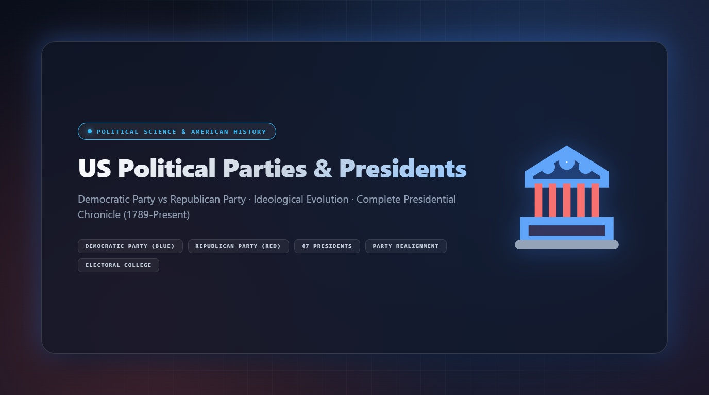
全維度深度剖析美國民主黨 (Democratic Party) 與共和黨 (Republican Party) 兩大百年政黨：從制憲先父對黨爭的警示、杜瓦傑定律與選舉人團機制、六大歷史政黨體系重組、20 世紀意識形態大逆轉 (The Great Reversal)，到歷任 47 任美國總統完整編年史、重大政績與互動式總統資料庫。
閱讀更多 →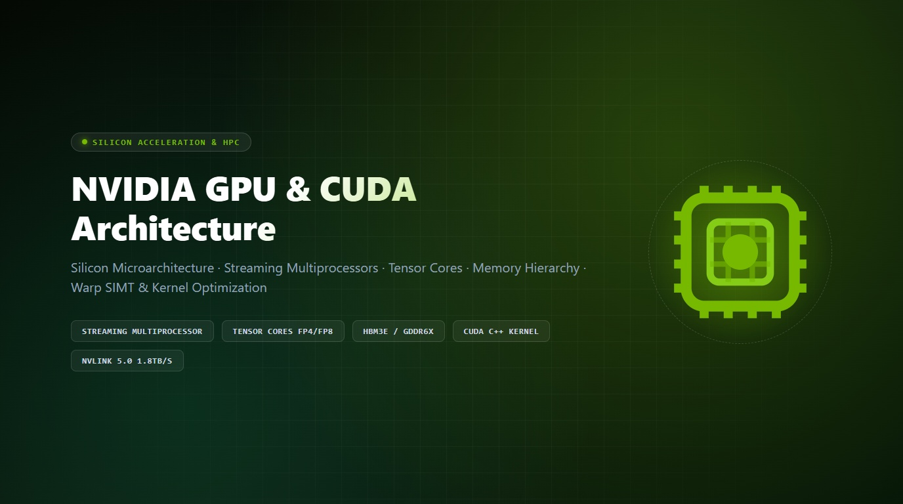
全維度深度剖析 NVIDIA GPU 硬體微架構與 CUDA 運算體系：深入 SM (Streaming Multiprocessor)、Warp Scheduler 雙發排程、Register File 瓶頸、Tensor Core FP4/FP8 矩陣核心、32-Bank Shared Memory 衝突機制、HBM3e/GDDR6X 頻寬壁壘、Warp Divergence、Memory Coalescing、手寫高效能 GEMM Kernel 優化，以及 NVLink 5.0 與 GB200 NVL72 互連拓撲。內建互動式 Roofline 模型與 CUDA Warp Occupancy 精算器。
閱讀更多 →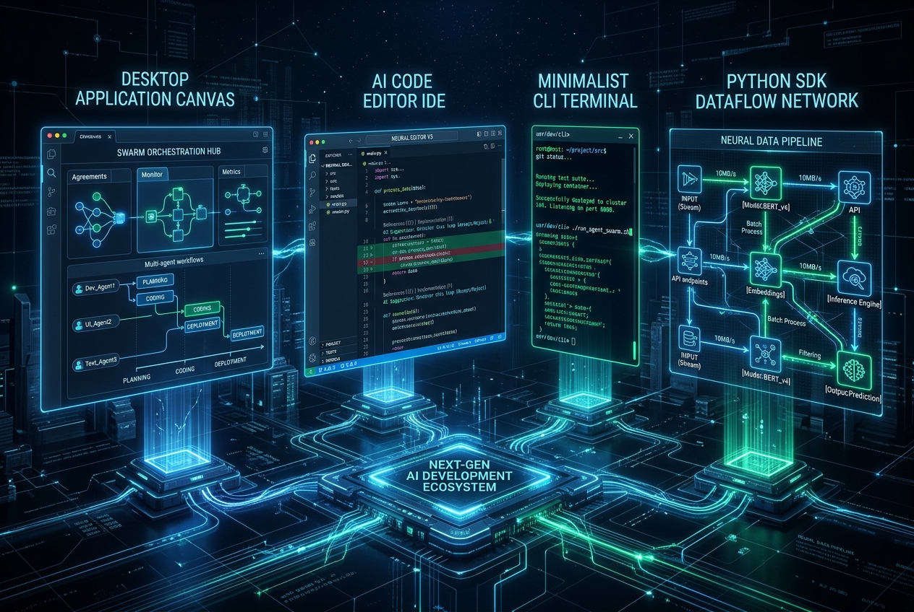
全維度深度橫評 Google Antigravity 四大核心形態：深入剖析 Antigravity 2.0 獨立多代理指揮中心、Antigravity IDE 沉浸式 AI 原生編輯器、agy 終端極速命令列引擎，以及 google-antigravity Python SDK 程式化代理核心。涵蓋統一 Agentic Runtime 底層架構、三大 AI 模態 (Tab/Cmd+I/Agent)、串流推論與 ToolCall 強型別攔截、背景 Scheduled Tasks (Cron)、Unix Pipeline 串接、36 項橫向對比矩陣與四維互動選型決策器。
閱讀更多 →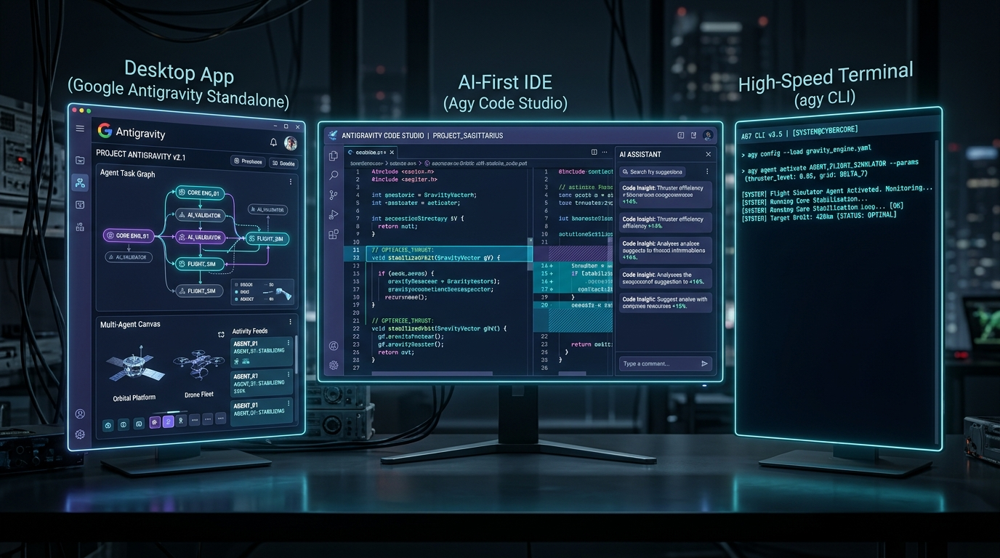
全方位橫向評測 Google Antigravity 三大產品型態：深入剖析 Antigravity Desktop 2.0 獨立多代理指揮中心、Antigravity IDE 沉浸式 AI 原生編輯器，以及 agy 終端命令列極速引擎。涵蓋統一 Agentic Engine 底層架構、三大 AI 協作維度 (Tab/Cmd+I/Agent)、排程調度 (Cron)、Unix Pipeline 串接、32 項規格對比矩陣與互動選型決策器。
閱讀更多 →全維度深度剖析 SpaceX 航太工程奇蹟：從第一性原理與五步工作法、獵鷹九號 (Falcon 9) Merlin 1D 推進與 VTVL 垂直回收動力學、超音速鈦合金格狀翼與凸優化著陸演算法；到猛禽發動機 (Raptor 1/2/3) 全流量分級燃燒循環 (FFSC) 350 bar 室壓熱力學突破、304L 不鏽鋼材料革命；再到 Starship 星艦與超重型助推器 Mechazilla 筷子發射塔空中懸停捕獲技術、星鏈 (Starlink V2 Mini) 相控陣與真空雷射星間鏈路 (OISL)、三模冗餘 (TMR) 航電與即時 Linux 系統架構。內建互動式齊奧爾科夫斯基火箭方程與多級入軌 Delta-v 模擬精算器。
閱讀更多 →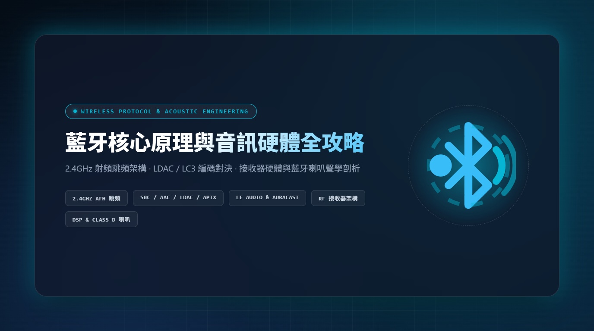
全維度深度剖析藍牙 (Bluetooth) 技術：從 2.4GHz ISM 頻段劃分、AFH 自適應跳頻機制 (1600 hops/s)、時隙分配與調變技術，到 BR/EDR 與 BLE 雙模架構、A2DP/AVRCP 協定堆疊；橫向對比 SBC、AAC、aptX HD/Adaptive、LDAC (990kbps) 與新世代 LE Audio LC3 / Auracast 廣播；詳細拆解 USB 藍牙接收器 RF 前端與 DAC 電路設計，以及藍牙喇叭 (Bluetooth Speaker) DSP 調音、Class-D 數位功放、被動輻射板與 TWS 雙聲道無線立體聲串聯原理。內建互動式音訊編碼頻寬與延遲試算模擬器。
閱讀更多 →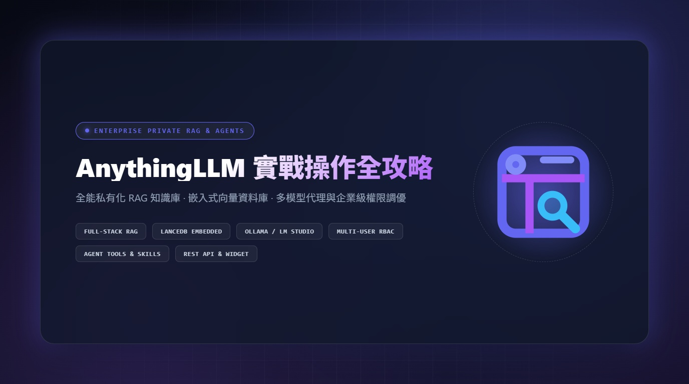
最完整的 AnythingLLM 全能私有化 RAG 知識庫實戰指南：深度解析 Workspace 工作區多租戶隔離機制、本地桌面端 (Windows/macOS/Linux) 安裝、Ollama 與 LM Studio 無縫對接、企業級 Docker Compose 與 NVIDIA GPU 容器化生產部署、多元文件攝取 (PDF OCR/網站爬蟲/GitHub/YouTube)、LanceDB 嵌入式向量庫、Query vs Chat 模式調校、AI Agent 工具擴展 (SQL/Web Search)、多用戶 RBAC 權限管控與 REST API/Web Widget 嵌入。內建互動式配置產生器與硬體規格試算器。
閱讀更多 →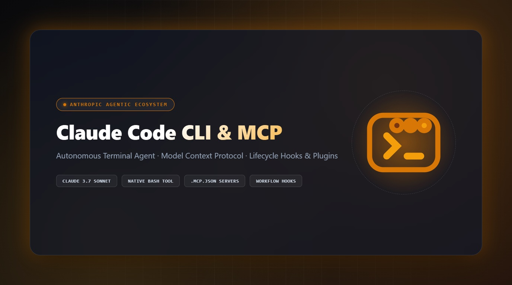
全維度深度剖析 Claude Code 終端自主代理生態：從 Agentic Loop 運作原理、MCP 協議標準（Tools、Resources、Prompts 與 stdio/SSE 傳輸架構）、.mcp.json 專案與全域配置、8 大生產力 MCP Server 推薦，到手寫 Python FastMCP 與 TypeScript 自定義 Server、Skill 自定義 Slash Commands 工作流、Hooks 生命週期防禦攔截，內建互動式配置產生器。
閱讀更多 →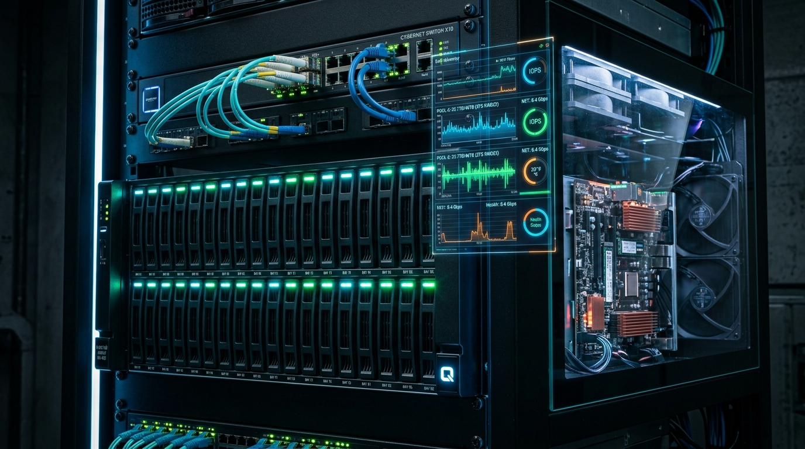
全維度深入剖析現代 NAS 儲存架構：從 3-2-1-1-0 備份準則、Btrfs CoW 快照與 ZFS Merkle Tree 自我修復、SHR 動態切片與 RAID-Z 擴容機制，到四大商業品牌（群暉 DSM、威聯通 QuTS hero、華芸 ADM、綠聯/極空間）及開源 DIY 方案（TrueNAS SCALE、Unraid、Proxmox VE + SAS HBA 直通）。內建互動式 NAS 儲存容量、RAID 容錯與重建時間試算器。
閱讀更多 →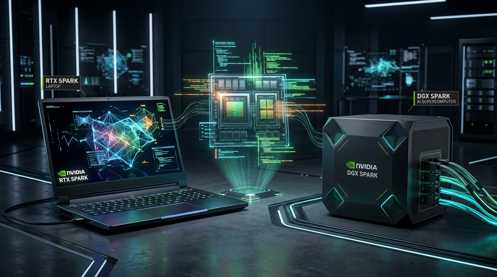
深度橫向評測 NVIDIA GB10 Grace Blackwell 超級晶片兩大化身：RTX Spark (Windows on Arm 旗艦筆電) vs DGX Spark (Linux 個人 AI 超級電腦)。全面拆解 128GB 統一記憶體、1 Petaflop 算力、WSL2 與原生核心損耗、TDP 散熱牆，以及 ConnectX-7 雙機 256GB 跑 405B 模型，附顯存與推論速度精算器。
閱讀更多 →全維度解析全新 Tesla Roadster 2：Performance 底盤真空吸附風扇、Thrust 雙尾噴冷氣體推進器（0-60mph 0.81s），以及 Rocket 單座戰鬥座艙與全周邊 10 噴嘴 3D 姿態控制（0-60mph 0.59s / 4.64G）。附規格大表與彈射模擬器。
閱讀更多 →全維度橫向評測 VGA、DVI、HDMI (1.4/2.0/2.1b) 與 DisplayPort (1.2/1.4a/2.1) 及 Type-C DP Alt Mode。深入解析類比/數位訊號轉換、TMDS 與 FRL 編碼機制、DP 微封包與 MST 菊花鏈、DSC 視覺無損壓縮，附贈互動式顯示頻寬試算器。
閱讀更多 →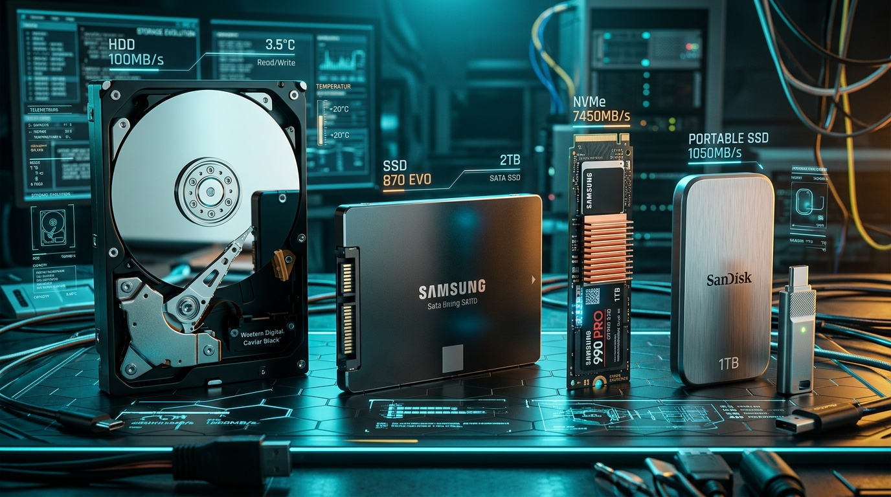
全維度橫向評測 3.5"/2.5" HDD、2.5 吋 SATA SSD、M.2 (2230/2242/2280 尺寸、PCIe 3.0/4.0/5.0 NVMe) 與各世代 USB 隨身碟/PSSD。含規格大表、M.2 尺寸規格詳解、PS5 與掌機擴充改裝、4K IOPS 與延遲比較及互動傳輸模擬器。
閱讀更多 →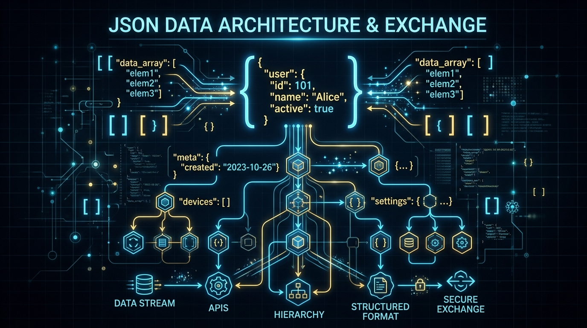
全方位深入剖析 JSON：從底層語法結構、RFC 8259 規範、資料型別與失真陷阱，到跨語言（JavaScript、Python、Go）序列化與反序列化實戰、JSON Schema 契約驗證、LLM Structured Outputs 應用，以及大整數精度遺失、循環引用與串流解析等企業級避坑守則。
閱讀更多 →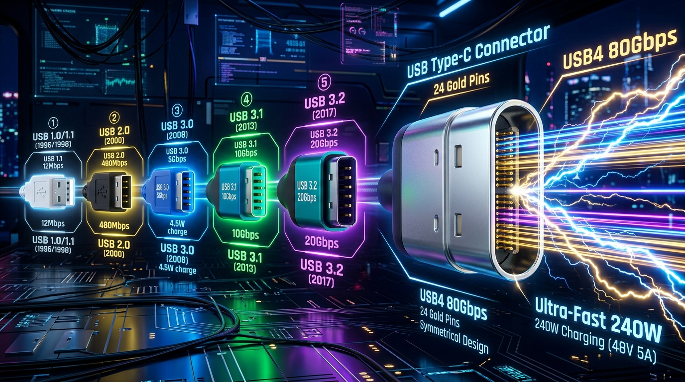
最完整的 USB 歷史技術全書：詳解 USB 1.0/1.1、USB 2.0、USB 3.x 換名之亂、Type-C 24-Pin 盲插架構、E-Marker 晶片、Alt Mode 影音輸出、USB PD 3.1 240W 快充、USB4 80Gbps 與 PAM3 編碼全世代演進。
閱讀更多 →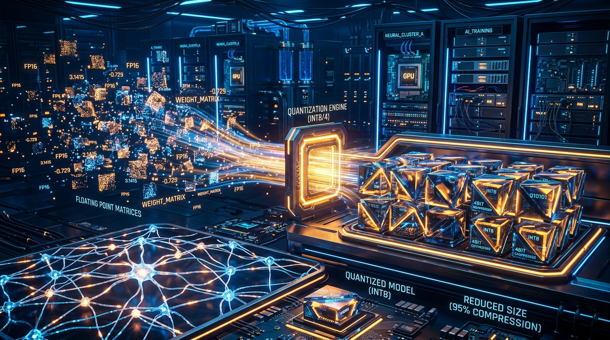
深度解析大語言模型命名代號規則（Instruct、MoE 8x7B、128K）、參數量級與顯存換算、模型壓縮三大流派，以及 GGUF、AWQ、GPTQ、EXL2 與 BitNet 1.58-bit 量化實戰對比。
閱讀更多 →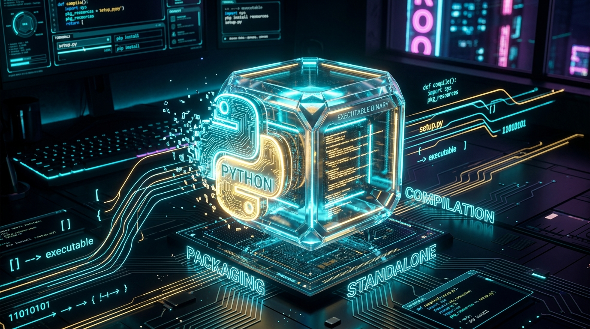
深入解析 Python 打包神器 PyInstaller：詳細介紹安裝方式、核心參數、sys._MEIPASS 與真實路徑解析、.spec 規格檔、動態 Hook 與 metadata 收集、Windows 多行程 Fork 炸彈防護、反編譯真相與 Cython/PyArmor 代碼保護，以及 GitHub Actions 多平台 CI/CD 自動化建置避坑實戰。
閱讀更多 →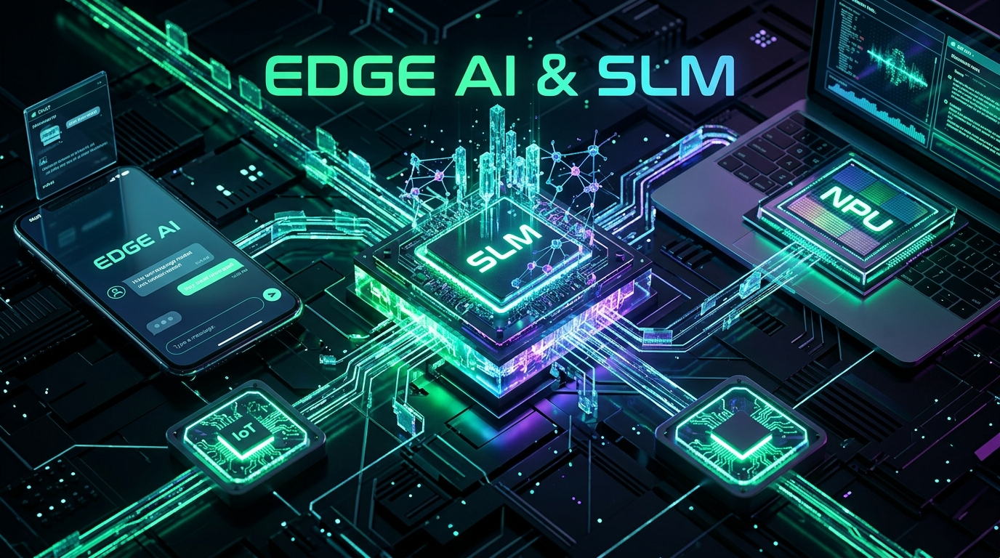
深度解析小型語言模型（SLM）的崛起浪潮：探討 SLM 與 LLM 的核心差異、合成數據與知識蒸餾、思考型小模型（DeepSeek-R1 Distill / Phi-4）、主流家族全景、投機解碼與階梯式路由架構、端側 NPU 與 WebGPU 部署，以及在單張消費級顯卡上的 QLoRA 微調實戰。
閱讀更多 →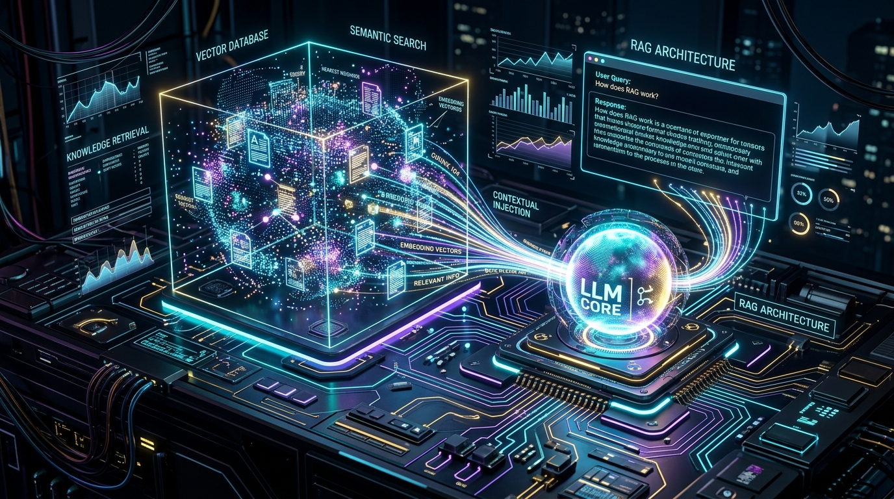
全面剖析檢索增強生成（RAG）技術：深入解析 Naive RAG、Advanced RAG、Modular RAG 與 GraphRAG 架構演進，涵蓋語意分塊、向量資料庫選型、混合檢索（BM25 + Dense）、重排序（Reranking），並提供完整 Python 端到端實戰程式碼與企業級評估最佳實踐。
閱讀更多 →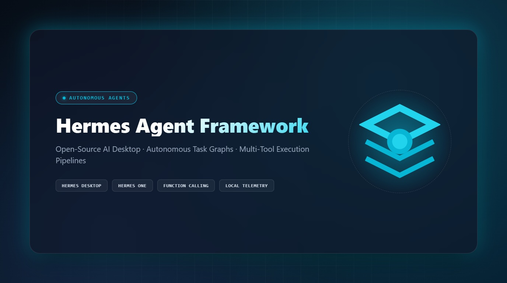
深入解析 Nous Research 官方推出的 Hermes Desktop 與社群旗艦 Hermes One 的核心架構、Bot Screen、3D Office、多通訊頻道與排程等功能，並提供全維度比較表格與選型決策指南。
閱讀更多 →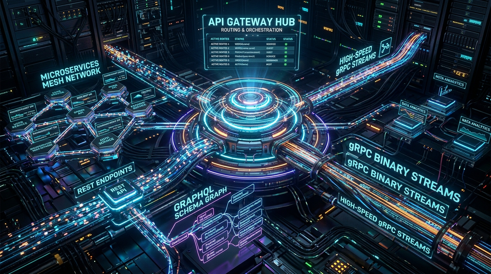
從單體到分散式系統：深入剖析 RESTful 成熟度模型 Level 0-3 與冪等性、GraphQL AST 執行與 N+1 DataLoader 破解、gRPC Protobuf 二進位編碼、WebSocket 與 SSE (AI 串流)、限流演算法及互動式架構選型精算器。
閱讀更多 →深度解析開源硬體監控神器 Libre Hardware Monitor：Ring 0 驅動與 MSR/Super I/O 底層讀取原理、/data.json HTTP Web Server 解析、Python 與 JS 跨語言串接、C# .NET SDK 整合與 WMI 自動化告警腳本，附互動式感測器模擬儀表板。
閱讀更多 →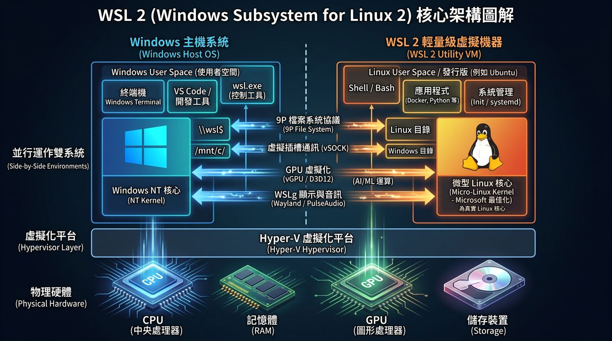
Windows Subsystem for Linux (WSL) 讓開發者能在 Windows 上直接執行原生 Linux 環境。本文詳細介紹 WSL2 的架構、安裝方式、與 VS Code 的完美整合，以及進階網路與效能調校技巧。
閱讀更多 →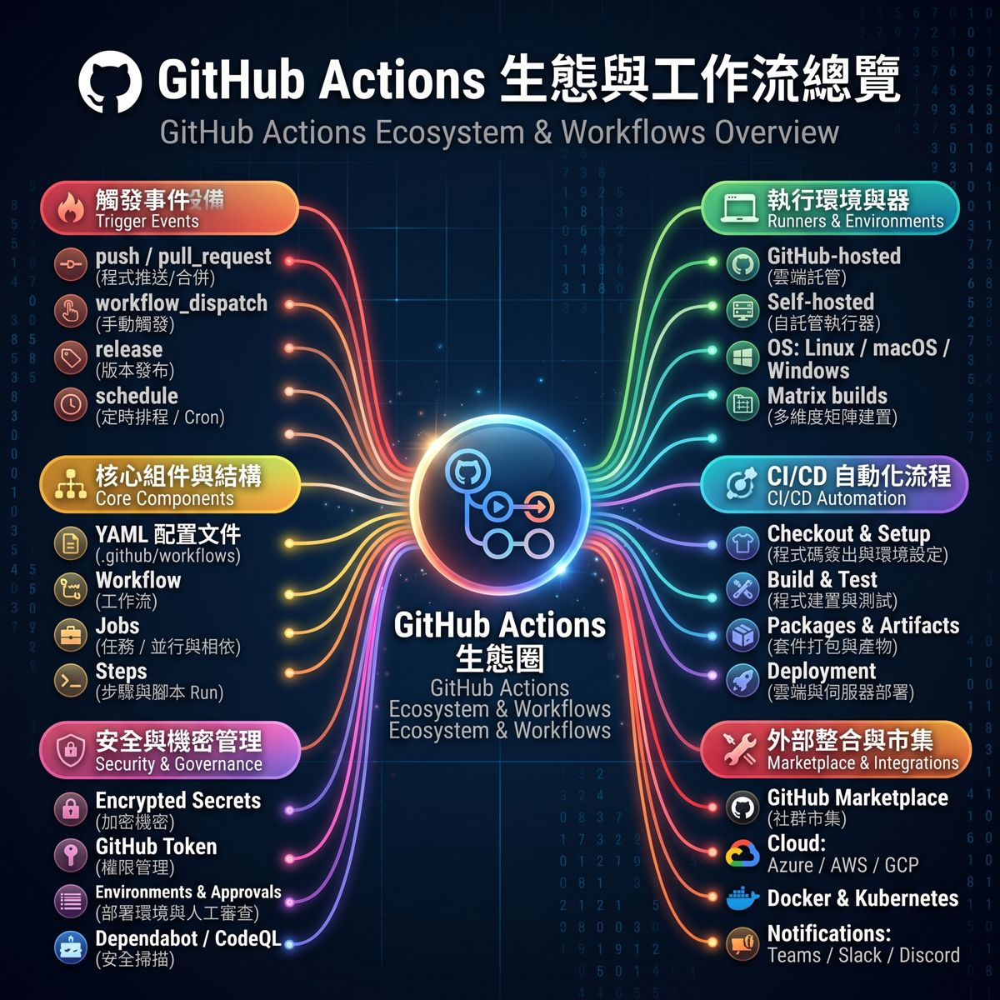
GitHub Actions 是 GitHub 內建的原生自動化與 CI/CD 平台。本文詳細介紹 GitHub Actions 的核心概念、工作流語法、常見應用場景與實戰範例。
閱讀更多 →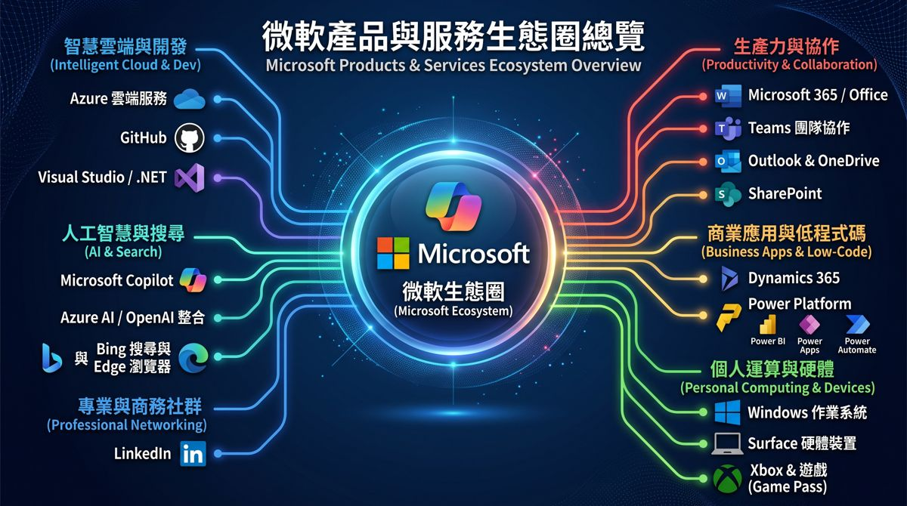
深入剖析微軟 (Microsoft) 橫跨個人電腦、企業生產力、Azure 雲端運算與引領全球的 Copilot AI 戰略生態系。
閱讀更多 →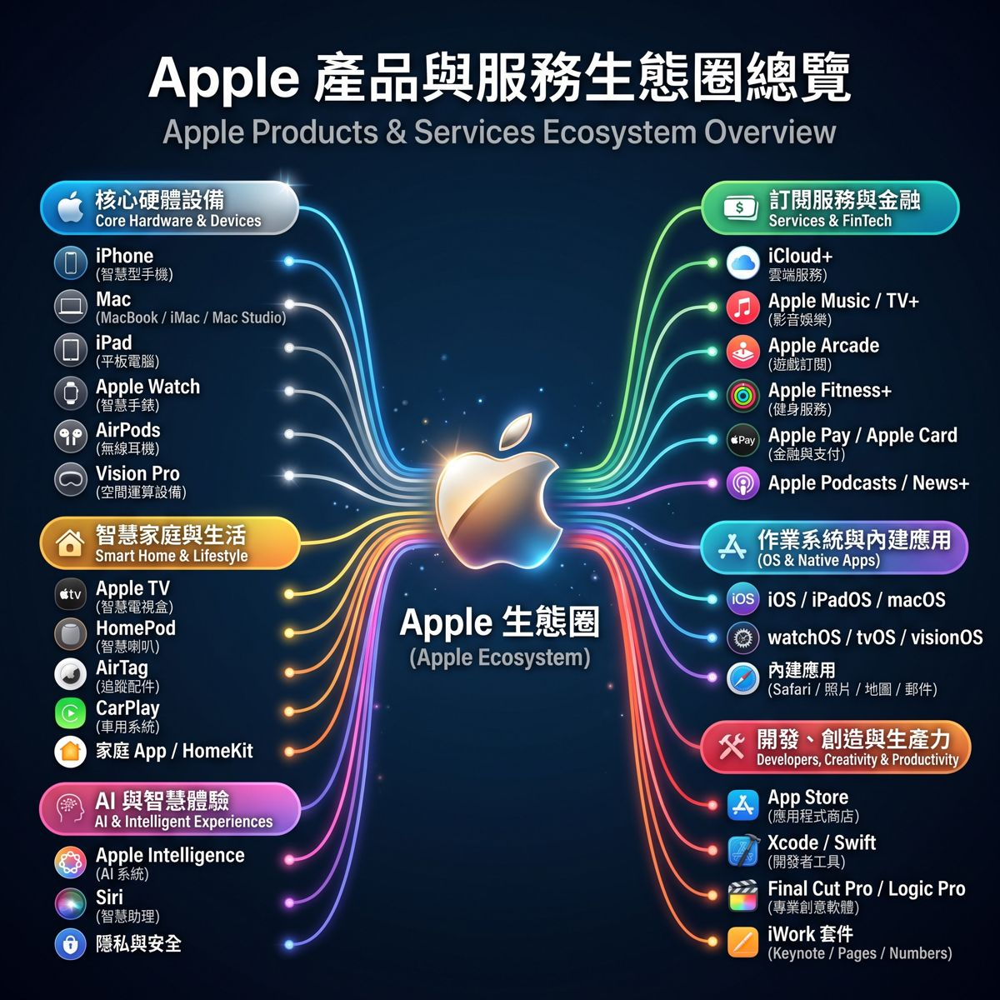
深入剖析 Apple 封閉卻極致完美的生態系，涵蓋核心硬體矩陣、作業系統、訂閱服務以及引領未來體驗的 Apple Intelligence。
閱讀更多 →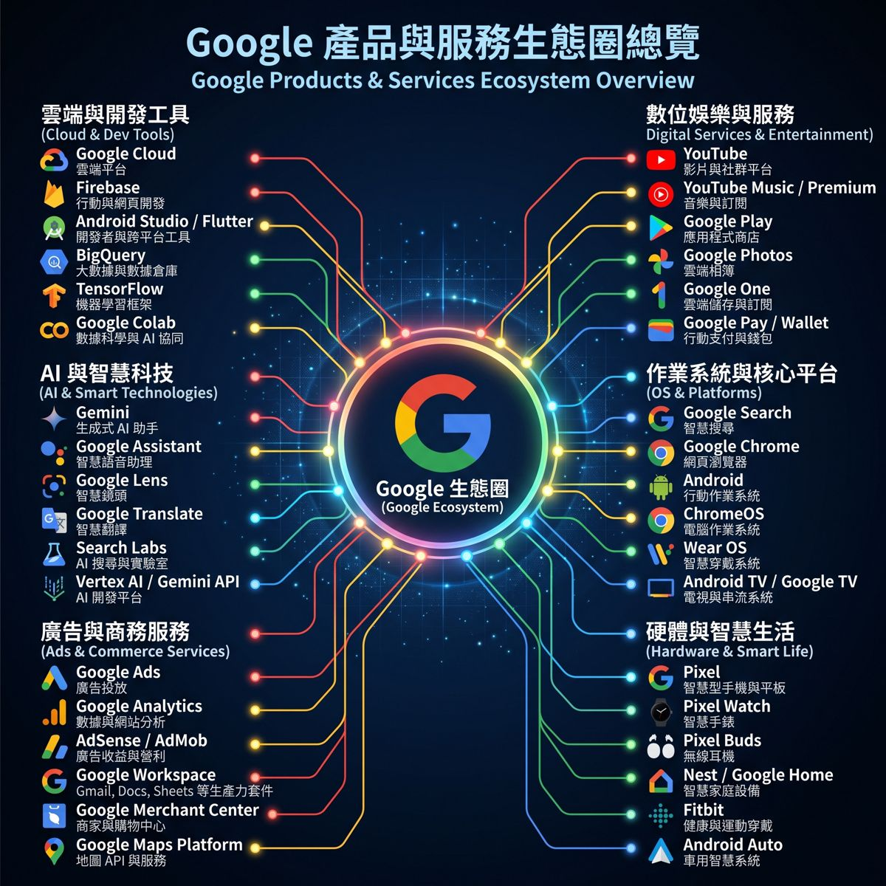
Google 的產品與服務橫跨個人消費、企業協作、AI 開發及雲端運算，本文按功能領域詳細分類整理 Google 龐大的服務生態。
閱讀更多 →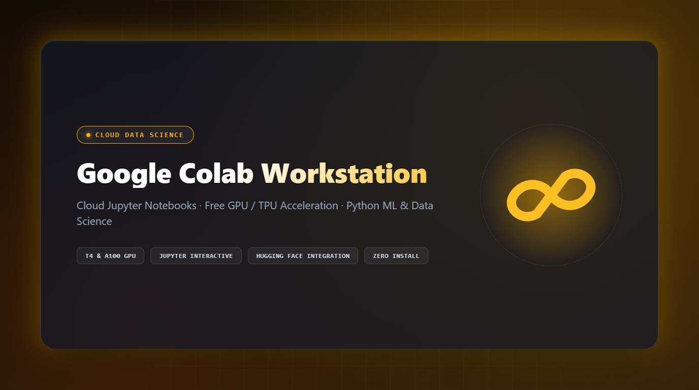
Google Colab 是一個免費的雲端 Jupyter Notebook 環境。本文詳細介紹 Colab 的核心功能、如何掛載 Google Drive、使用免費 GPU/TPU 資源，以及進階使用技巧。
閱讀更多 →詳細梳理 Tesla 目前的核心車系矩陣（S3XY 家族、Cybertruck），以及其背後的關鍵技術：FSD、OTA 與超級充電網路。
閱讀更多 →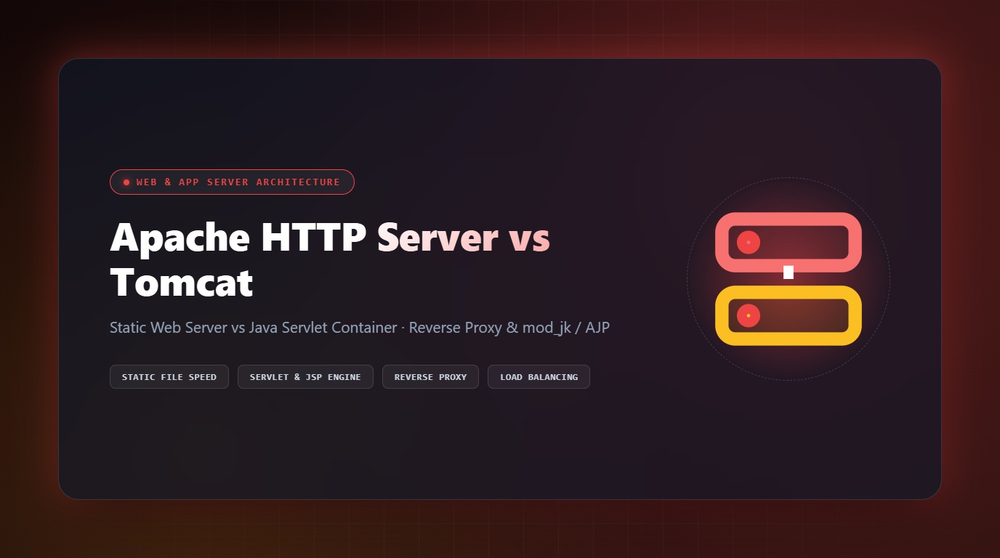
深入解析 Apache HTTP Server 與 Apache Tomcat，涵蓋它們的各自定位、功能差異，以及在實際架構中如何協同工作，以硬核工程師視角拆解底層架構。
閱讀更多 →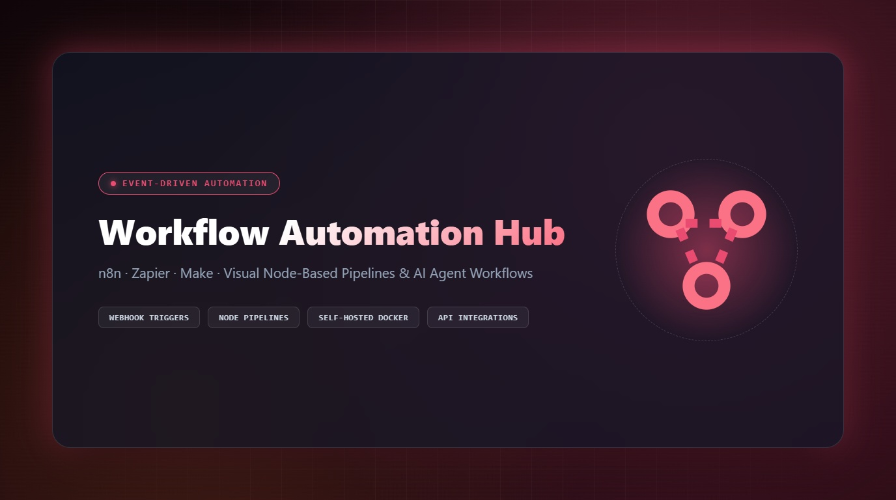
探討現代 AI 技術如何顛覆傳統自動化。從 Prompt Engineering 到 Agentic Workflows，詳細介紹 LangChain, AutoGen, n8n 等熱門 AI 自動化工具與落地方法。
閱讀更多 →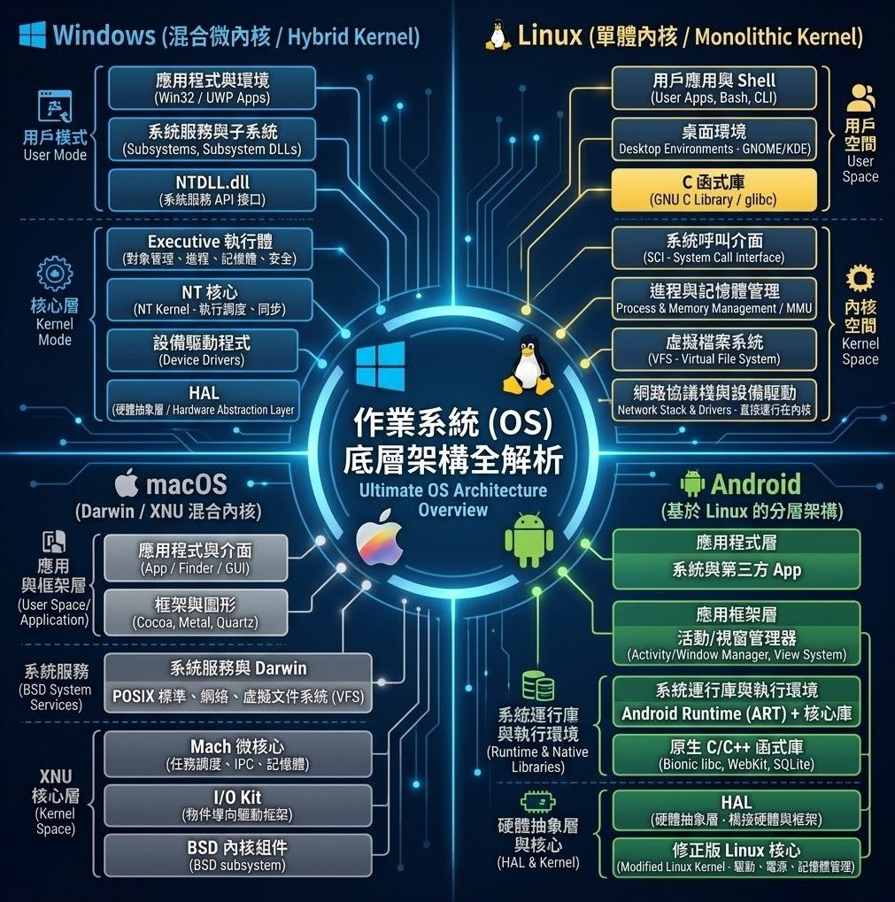
深入探討現代四大作業系統的核心架構。從 Windows 的 NT 核心、macOS 的 Mach/BSD 混合核心、Linux 的宏核心，到 Android 基於 Linux 的客製化與 ART 虛擬機，解析各自的設計哲學與適用場景。
閱讀更多 →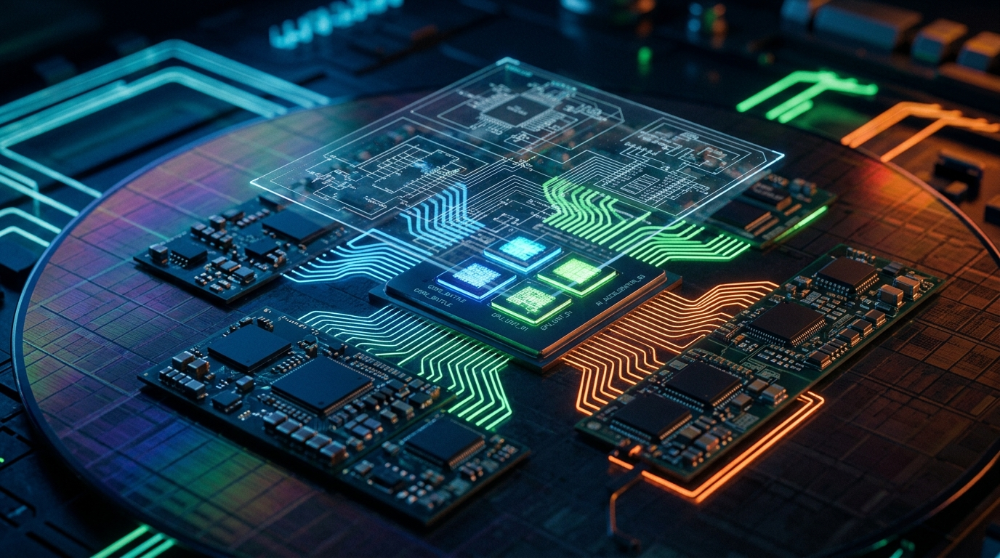
從 Dennard Scaling 崩潰到 CoWoS/Foveros 先進封裝，全維度解析 Intel 18A RibbonFET、AMD Zen 5 / MI300X、NVIDIA Blackwell B200 / NVLink 5 及 Google TPU / Groq LPU，附 Roofline 算力頻寬試算器。
閱讀更多 →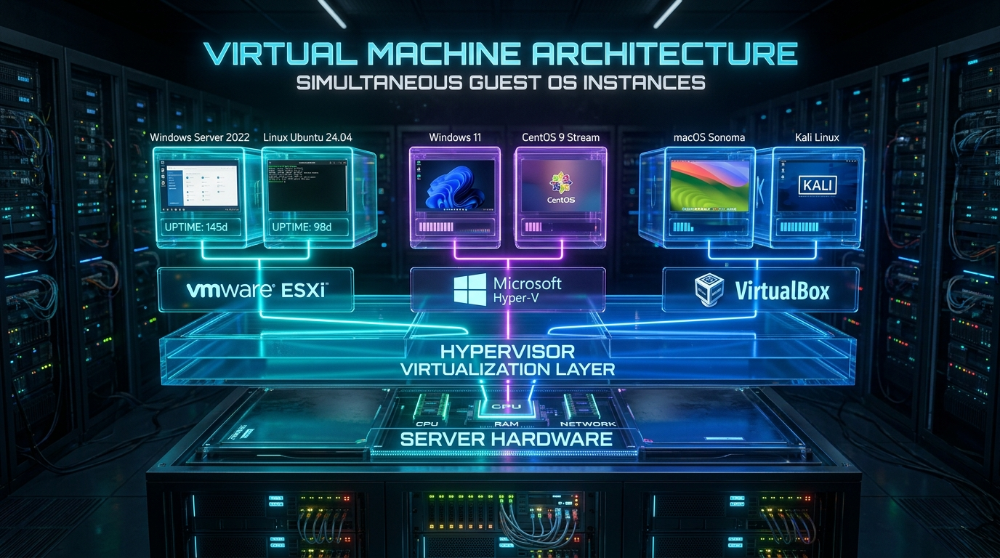
深入探討主流虛擬機器軟體的架構與優缺點：VMware Workstation 的極致效能、VirtualBox 的開源靈活、Hyper-V 的原生整合，以及 macOS 專屬的 Parallels Desktop。幫你找出最適合的 VM 工具。
閱讀更多 →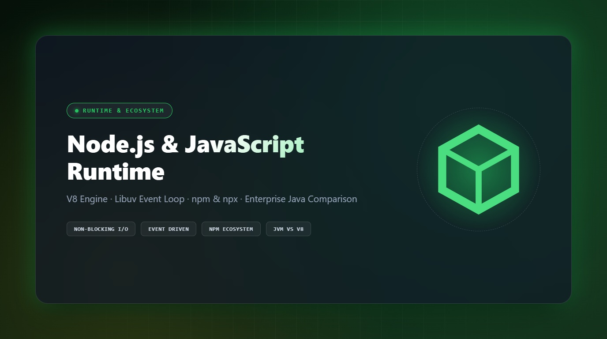
深入剖析後端兩大主流技術棧：Java 及其 JVM 生態系，與基於 V8 引擎的 Node.js 及其龐大的 npm 套件管理系統。以硬核工程師視角，拆解底層差異與適用場景。
閱讀更多 →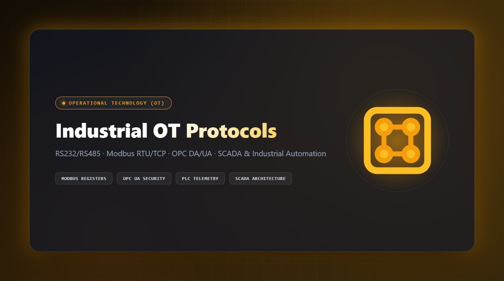
深入解析工業物聯網 (IIoT) 中最核心的通訊協定與介面，從硬體層的 RS232、RS485，到網路層的 Modbus RTU/TCP，再到軟體交換層的 DDE、OPC DA 與現代化的 OPC UA，帶你一次搞懂 OT 架構。
閱讀更多 →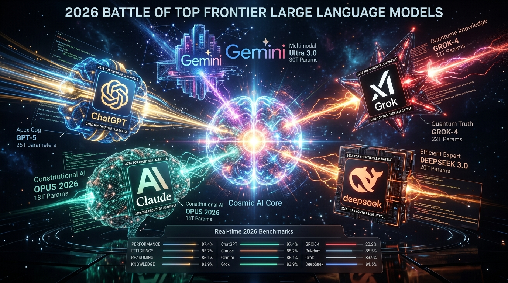
深入解析目前最強的 Top 5 大語言模型，涵蓋 GPT-5、Claude 4.5、Gemini 2.5 閉源巨頭，以及 Llama 4、DeepSeek V4 等開源王者，從架構、效能到實戰應用全面解析。
閱讀更多 →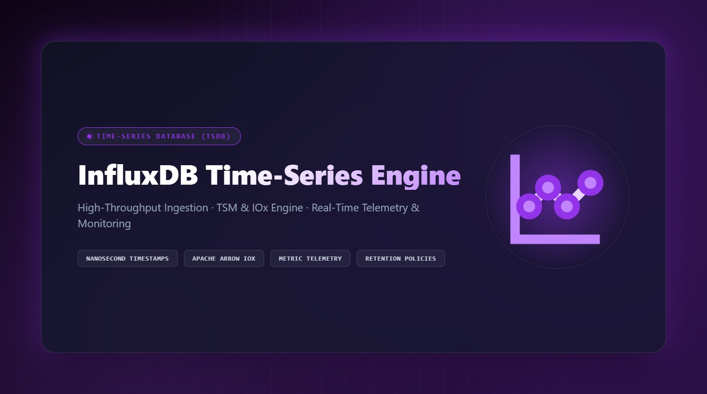
InfluxDB 是專門為時間序列資料打造的資料庫。完整教學涵蓋資料模型（Buckets、Measurements、Tags、Fields）、Flux 查詢語言、InfluxQL、Docker 安裝、保留政策、降措、Tasks 與實戰應用場景。
閱讀更多 →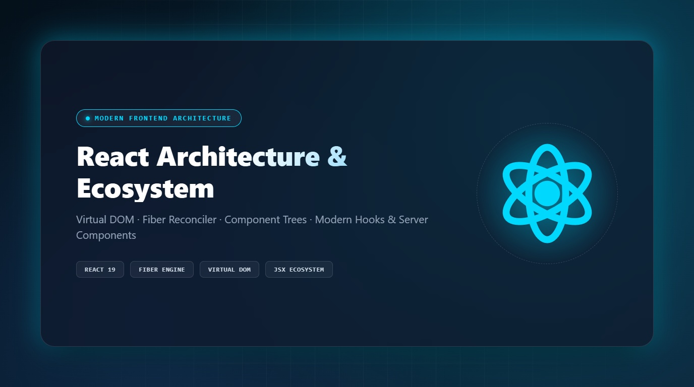
React 由 Meta（前身 Facebook）開發維護的開源 JS 函式庫。完整介紹核心概念、元件化開發、虛擬 DOM、JSX 語法、Hooks 與生態系統。
閱讀更多 →深入解析 Claude Code 的三大擴展機制：Skill（可重用指令）、MCP（外部資料連接）與 Plugin（打包分享）。從設定到實戰，把 Claude Code 打造成真正的個人工程平台。
閱讀更多 →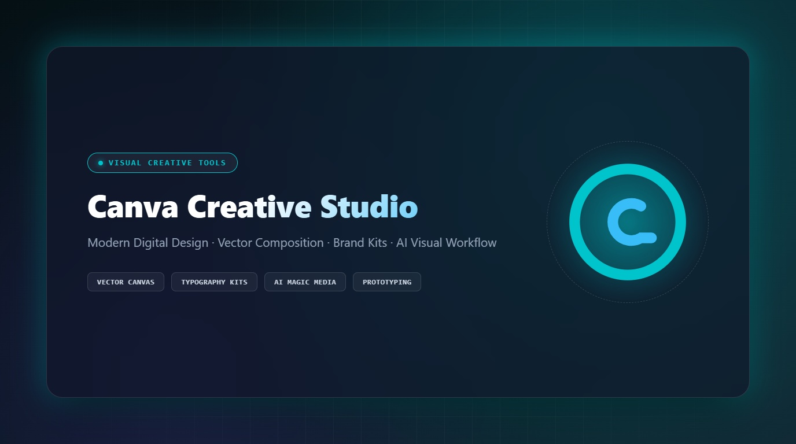
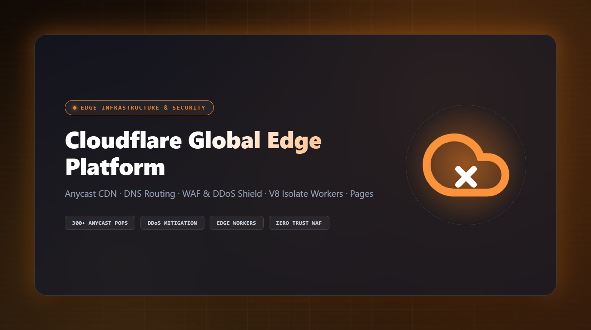
Cloudflare 完整教學：CDN 加速、DNS 管理、SSL TLS 加密、WAF 防護、DDoS 防禦、Cloudflare Workers、Pages 部署、Tunnel 內網穿透、R2 物件存儲與 Analytics 功能介紹。
閱讀更多 →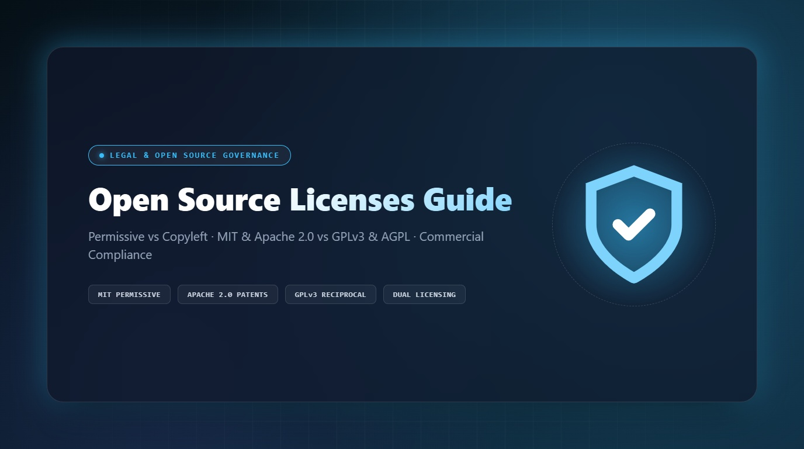
深入解析開源軟體的兩大授權陣營——寬鬆型（MIT、Apache-2.0、BSD）與強傳染型著佐權（GPL、AGPL、SSPL）。幫你搞懂商用閉源、傳染範圍、專利保護與實戰選擇策略。
閱讀更多 →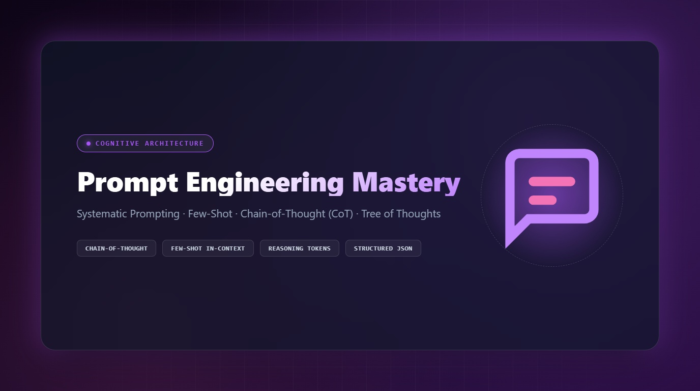
提示工程是什麼？怎麼下指令讓 ChatGPT / Claude 更好用？分享零樣本、少樣本、Chain-of-Thought 思維鏈技巧，以及實戰 prompt 模板。
閱讀更多 →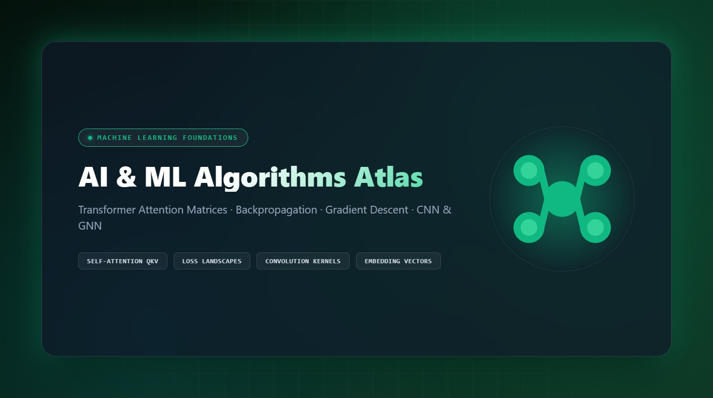
整理自維基百科的 AI 演算法列表，涵蓋搜尋優化、機器學習、神經網路、強化學習、電腦視覺與遊戲 AI 等 11 大類別，超過 50 種演算法輕鬆認識。
閱讀更多 →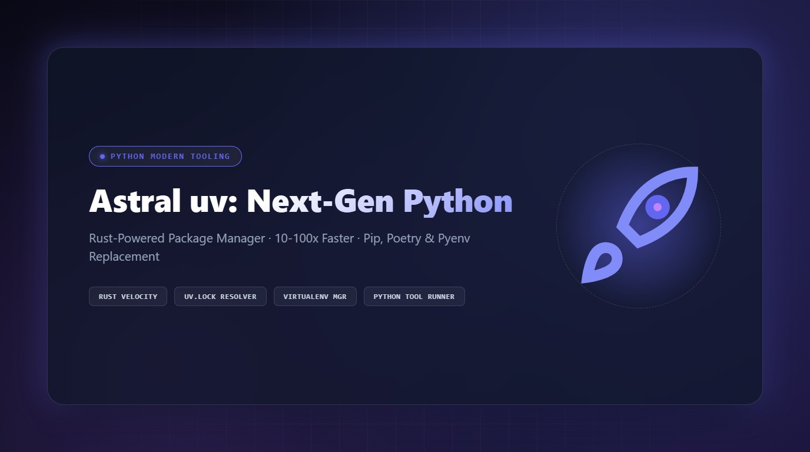
uv 完整教學：安裝、專案管理、pyproject.toml、虛擬環境、Python 版本管理、uvx 工具執行、行內腳本、Workspaces 工作區、發布包裝與從 pip/pipenv/poetry 遷移。10-100x 速度提升的全面指南。
閱讀更多 →Compose 完整教學：compose.yaml 核心語法、volumes 與 networks、depends_on 搭配 healthcheck 控制啟動順序、profiles 按需啟動服務、Compose Watch 開發熱重載與常用指令速查表。
閱讀更多 →Hooks 完整教學：32 種生命週期事件詳解、settings.json 設定結構、stdin JSON 輸入、退出碼與 JSON 輸出控制，含自動格式化、保護敏感檔案、攔截危險指令等實戰食譜。
閱讀更多 →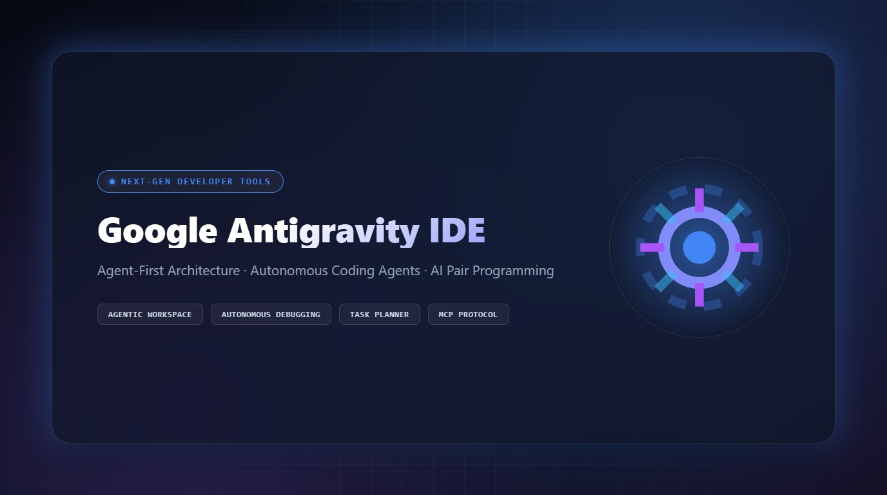
Antigravity 完整教學：Agent Manager 任務指揮中心、Artifacts 驗收機制、瀏覽器整合、Fast/Planning 模式、支援模型與定價、Antigravity 2.0 新功能與 slash 指令速查表。
閱讀更多 →tmux 完整教學：核心概念、macOS/Linux/WSL 安裝、Session/Window/Pane 快捷鍵大全、.tmux.conf 進階配置、SSH 斷線存活實戰與指令速查表。
閱讀更多 →深入解析 Claude Code 的 MCP（Model Context Protocol）與 Skill 功能。教你如何安裝 MCP Server、撰寫 .mcp.json 配置、建立自定義 Skill、撰寫 Hooks 自動化，以及 MCP、Skill、Plugin 的關係。
閱讀更多 →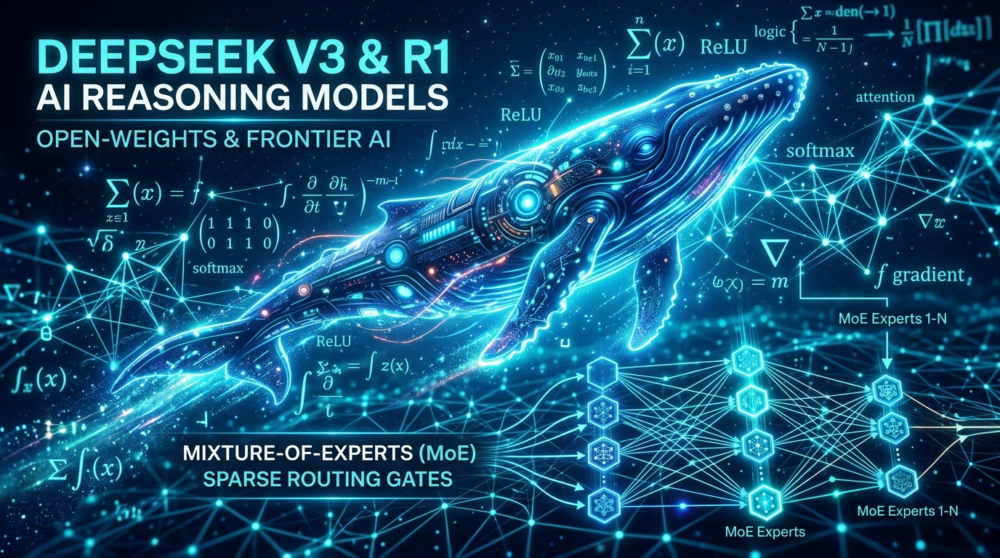
DeepSeek AI 開源模型家族，包括 V3、V3.2、R1 等。本文詳細介紹模型架構、API 定價（比 OpenAI 便宜 5–30 倍）、本地部署方法與 CLI 使用教學。
閱讀更多 →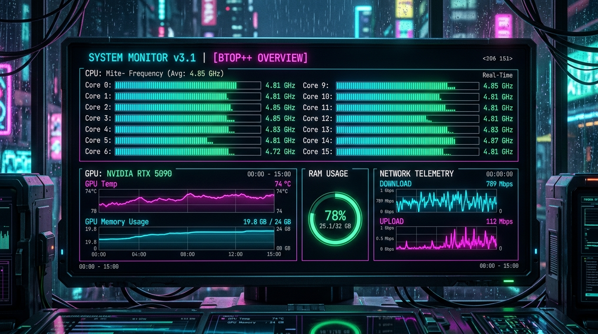
btop 是一個強大的 terminal-based 資源監控工具，整合 CPU、記憶體、磁碟 IO、網路流量與進程監控。本文詳細介紹安裝、操作快捷鍵、配置與進階功能。
閱讀更多 →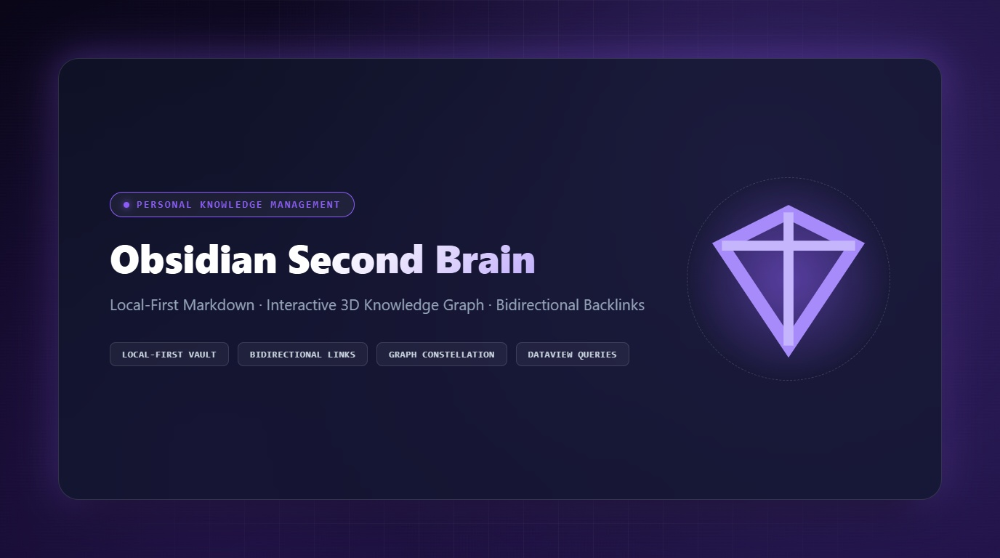
Obsidian 知識管理工具完整入門教學：Windows/macOS/Linux 安裝、Vault 建立、Markdown 基礎、核心插件與社群插件介紹，以及 Text Generator、Vault Companion for Claude 等 Claude AI 插件設定。
閱讀更多 →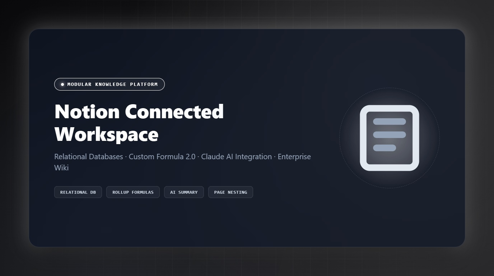
Notion 全面入門教學：工作區建立、頁面設計、資料庫 relation&rollup、模板庫應用、AI 功能與 Claude 整合技巧，以及進階自動化與嵌入式開發。
閱讀更多 →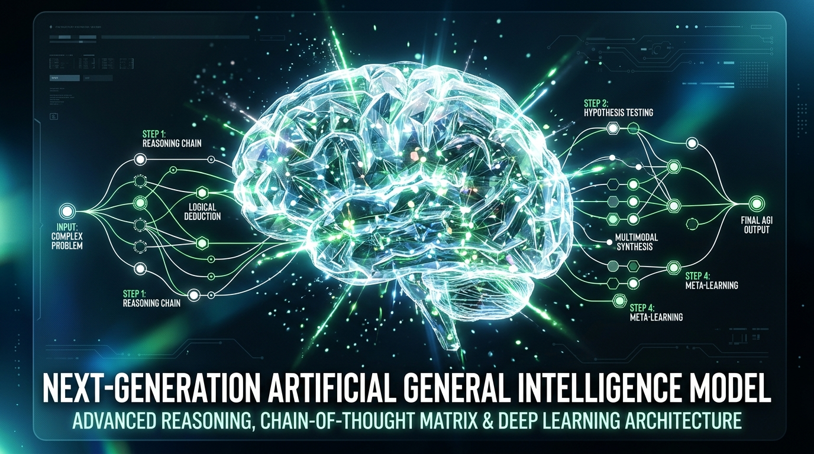
OpenAI GPT-5 系列包含 GPT-5、GPT-5 Turbo、GPT-5 Mini 等多個版本。本文詳細介紹各模型的架構、上下文窗口、程式碼能力、定價與 OpenAI 生態整合。
閱讀更多 →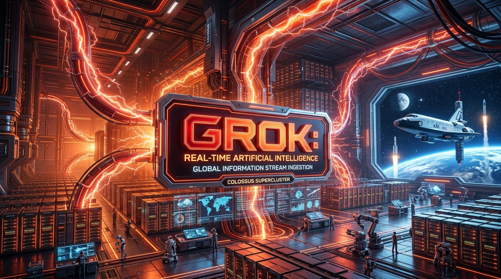
xAI Grok 2.5 由 Elon Musk 領導的 xAI 開發，支援即時搜尋、Twitter/X 整合、語音對話與多模態功能。
閱讀更多 →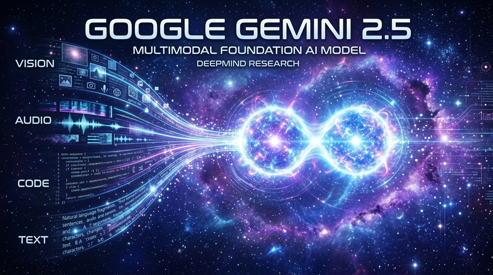
Google Gemini 系列模型包含 1.5、2.0、2.5 多個版本。本文詳細介紹各模型的多模態能力、上下文窗口、定價、程式碼表現與 Google 生態整合。
閱讀更多 →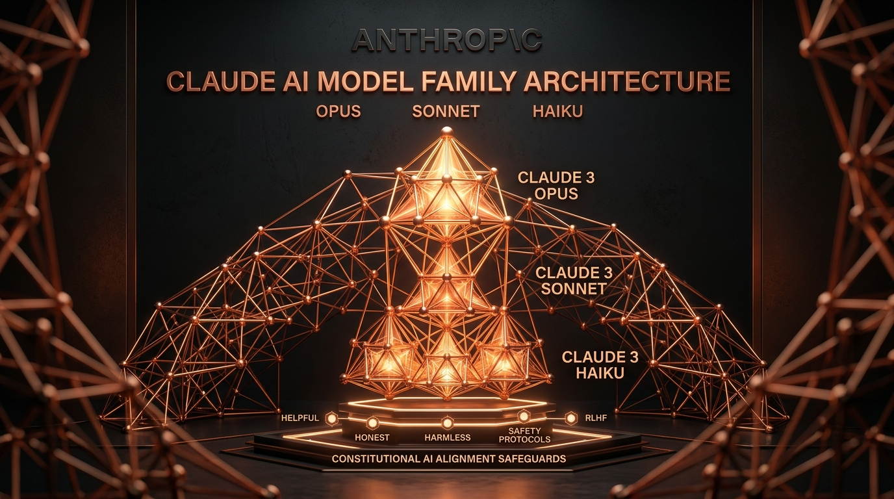
Anthropic Claude 5 系列模型包括 Fable、Opus、Sonnet、Haiku 四大型號。本文詳細介紹各模型的功能、效能、定價與應用場景，幫你選擇最適合的 Claude 模型。
閱讀更多 →Kubernetes 是容器編排的標準。本文詳細介紹 k8s 的核心概念 (Pod、Deployment、Service)，安裝方式 (minikube/k3s/Docker Desktop)，完整 kubectl 命令速查與 YAML 範例。
閱讀更多 →Zapier、Make.com、n8n 三大工作流程自動化平台在定價、功能、AI 整合與自架能力上的全面比較，包含 2026 年費用情境分析。
閱讀更多 →Hermes Agent 是 Nous Research 開發的開源 AI 助手。本文詳細介紹 Hermes Agent 的架構、安裝方式、完整 CLI 命令速查，以及進階技巧如子代理器、沙箱、排程與 MCP。
閱讀更多 →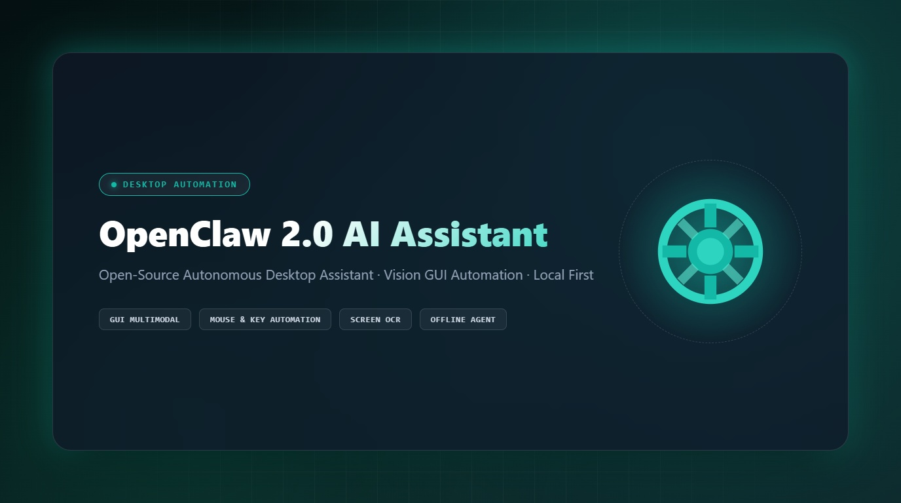
OpenClaw 是一個開源、自架的 AI 助手平台。本文詳細介紹 OpenClaw 的架構、安裝方式（curl/npm/pnpm）、完整 CLI 命令速查，以及多頻道整合（Telegram、Discord、WhatsApp）與進階技巧。
閱讀更多 →Wireshark 是網路封包分析的利器。本文詳細介紹 Wireshark 的安裝（Windows/macOS/Linux）、介面操作、顯示過濾、通訊協定分析與進階技巧。
閱讀更多 →Docker 是一個開源的容器化平台。本文詳細介紹 Docker 的概念、安裝方式、基本指令、Docker Compose 與進階技巧。
閱讀更多 →LM Studio 是一個強大的本地 LLM 桌面應用程式。本文詳細介紹 LM Studio 的下載安裝、模型管理、對話功能、GPU 加速設定與實用技巧。
閱讀更多 →零成本、保護隱私！深度解析 Ollama 本地模型部署：CLI 指令速查、VRAM 顯存計算與選型、Modelfile 封裝自製 GGUF、環境變數調校、OpenAI 相容 API 及互動式 VRAM 試算工具。
閱讀更多 →從 Hugging Face 下載 GGUF 格式模型，安裝 llama.cpp 在 Windows 上本地推理，設定 GPU Offload（CUDA/Vulkan/DirectML）與 Context 長度，一次搞懂。
閱讀更多 →Claude Code 是 Anthropic 推出的 AI 編碼助手，支援 Terminal、VS Code、Web 等多平台。本文整理其六大核心能力、完整的 CLI 命令與內建斜線指令速查。
閱讀更多 →macOS 終端機結合 BSD Unix 與 Apple 圖形層強大功能。本文整理 150 個 macOS 常用指令，包含 Homebrew、剪貼簿、網路與開發工具。
閱讀更多 →Node.js、npm、npx 三大工具的完整指令速查，包含 npm init、npm install、npm ci、npm run、npm publish 以及 npx 的三種主要用途。
閱讀更多 →ChatGPT、Claude、Gemini、Grok 四大語言模型在推理能力、程式碼質量、多模態、價格等方面的全面對比分析。
閱讀更多 →